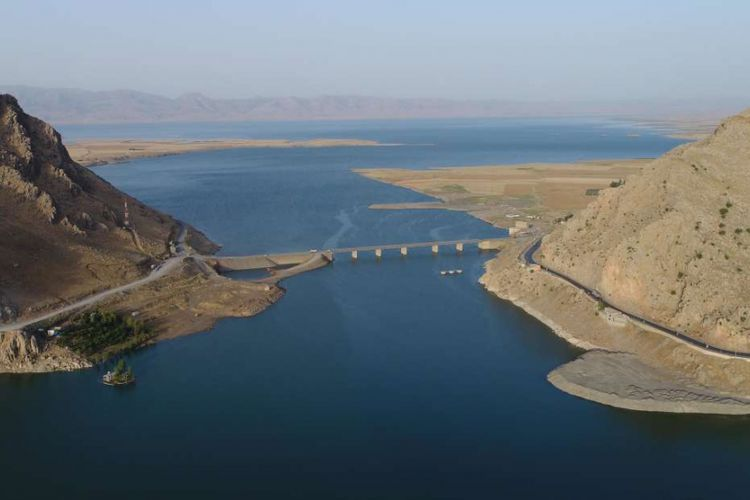

Hilang 2.000 Tahun, Kota Alexander Agung Ditemukan di Irak
LUTFY MAIRIZAL PUTRA
KabarKabur.com -27/09/2017, 08:05 WIB

Para peneliti berkata bahwa tanah berbentuk segitiga di sebelah kanan adalah Qalatga Darband(British Museum)
KabarKabur.com - Para peneliti membawa kabar baik. Mereka melaporkan telah menemukan sebuah kota yang hilang sejak lebih dari 2.000 tahun lalu. Bernama Qalatga Darband, kota kuno yang menghadap sungai di Sulaimaniya, Kurdistan, Irak, itu masih memiliki sisa-sisa pemukiman kuno yang dibentengi.
Qalatga Darband didirikan pada era kekuasaan Alexander Agung. Para peneliti memperkirakan pembangunan Qalatga Darband selesai setelah Alexander Agung mengalahkan Raja Persia Darius III di Mesopotamia.
Dalam bahasa Kurdi, Qalatga Darband memiliki arti “kastil yang melintasi gunung". Ia pernah menjadi tempat perdagangan anggur yang dipenuhi oleh tentara.
"Ini adalah hari-hari awal, tapi kami pikir kota ini pernah menjadi kota yang ramai di perjalanan dari Irak ke Iran. Anda bisa membayangkan orang-orang memasok anggur kepada tentara yang lewat," kata arkeolog John MacGinnis dari British Museum kepada The Times.
Para peneliti juga menggunakan hasil fotografi mata-mata satelit yang diambil oleh pemerintah Amerika Serikat pada tahun 1960-an semasa Perang Dingin. Foto dari program Corona itu telah dideklasifikasi pada 1990-an dan digunakan untuk mengindetifikasi sisa-sisa peninggalan.
“Pesawat tanpa awak menghasilkan informasi yang bagus. Menganalisis tanda-tanda tanaman belum pernah dilakukan dalam arkeologi Mesopotamia. Bila ada dinding di bawah tanah, gandum dan jelai tidak akan tumbuh dengan baik, jadi ada perbedaan warna dalam pertumbuhan tanaman,” kata MacGinnis seperti dikutip dari Science Alert pada Selasa (26/9/2017).
Hasil penyelidikan di lapangan telah mendapati adanya fondasi sejumlah bangunan besar, termasuk dinding yang diperkuat dan penekan dari batu yang mungkin digunakan dalam produksi anggur atau minyak. Selain itu, para peneliti juga menemukan genteng dan patung yang diperkirakan menggambarkan sosok Persephone dan Adonis.
Meski belum dilakukan penelitian mengenai usia peninggalan tersebut, MacGinnis dan timnya menduga benda bersejarah itu berasal dari 100-200 tahun sebelum masehi.
Sebuah koin yang ditemukan menggambarkan Raja Parthia Orodes II, yang memerintah antara tahun 57 SM sampai 37 SM jadi ada kemungkinan bahwa Qalatga Darband masih didiami setelah Alexander Agung tak lagi berkuasa.
Tak sedikit waktu yang diperlukan para peneliti untuk mengungkap Qalatga Darband secara utuh. Penggalian diperkirakan akan berlanjut hingga 2020. Hingga saat itu, penemuan bersejarah menarik lainnya akan terungkap.
penulis :Lutfy Mairizal Putra
Editor :Shierine Wangsa Wibawa
sumber :sciene alert